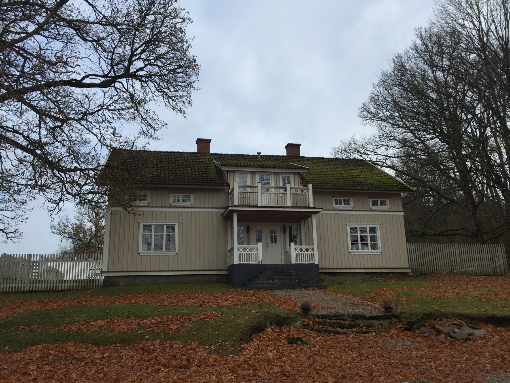
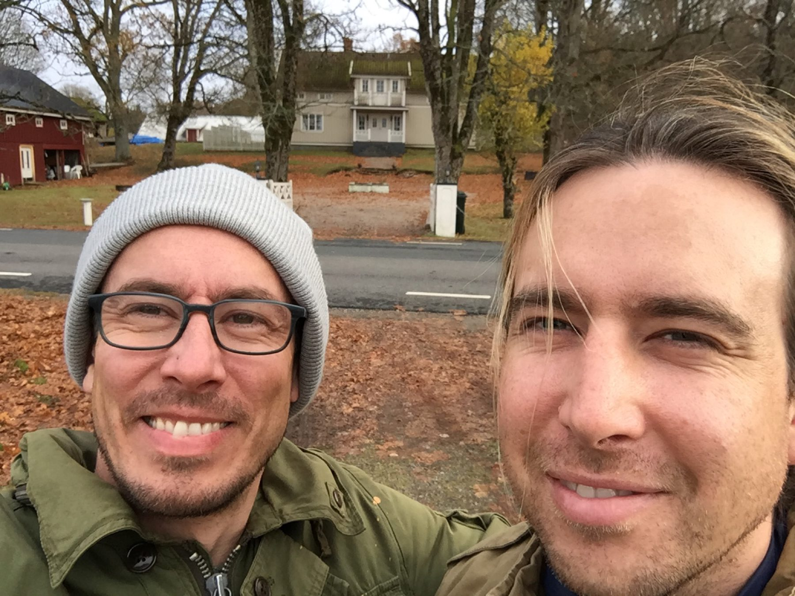
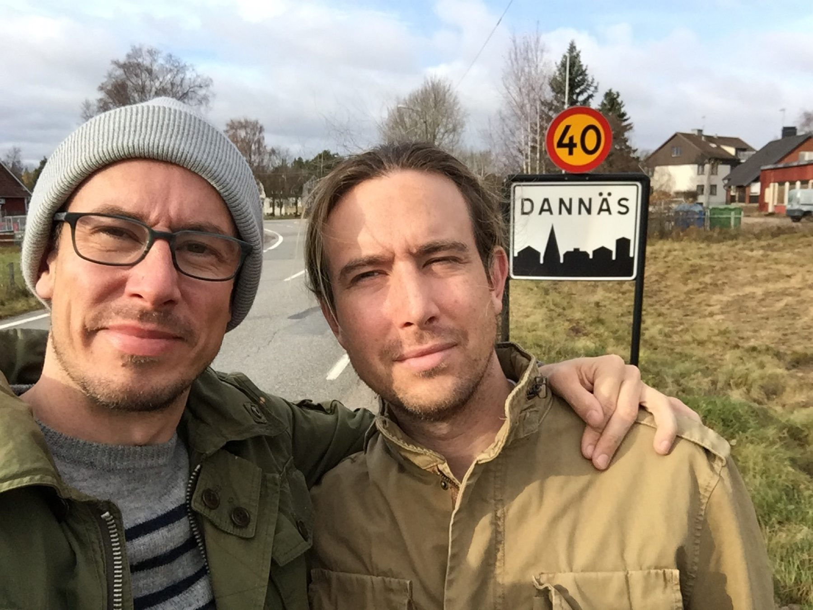
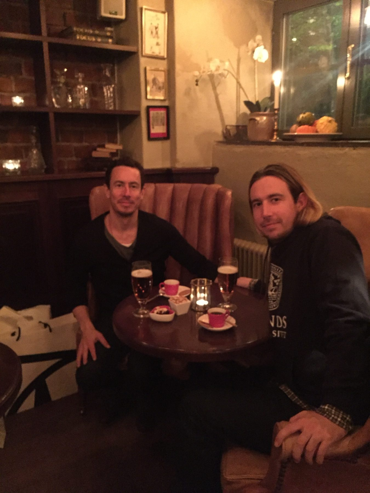
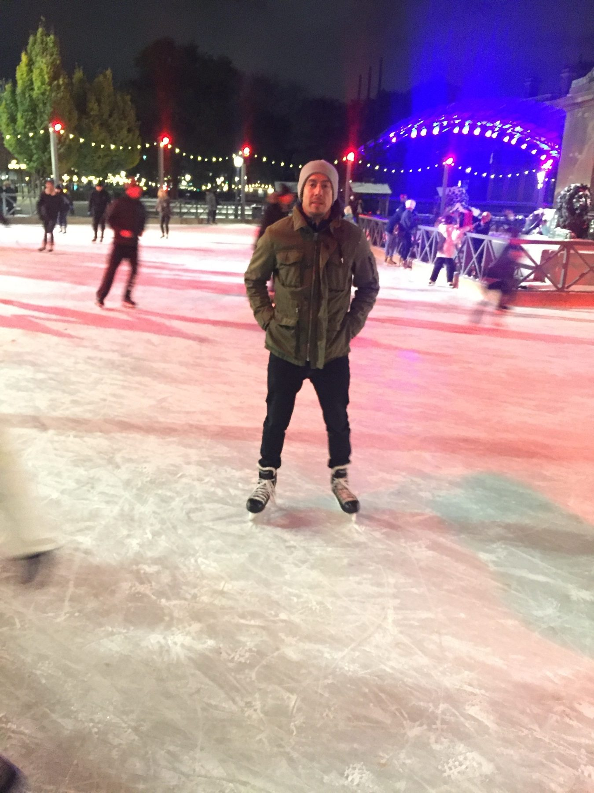
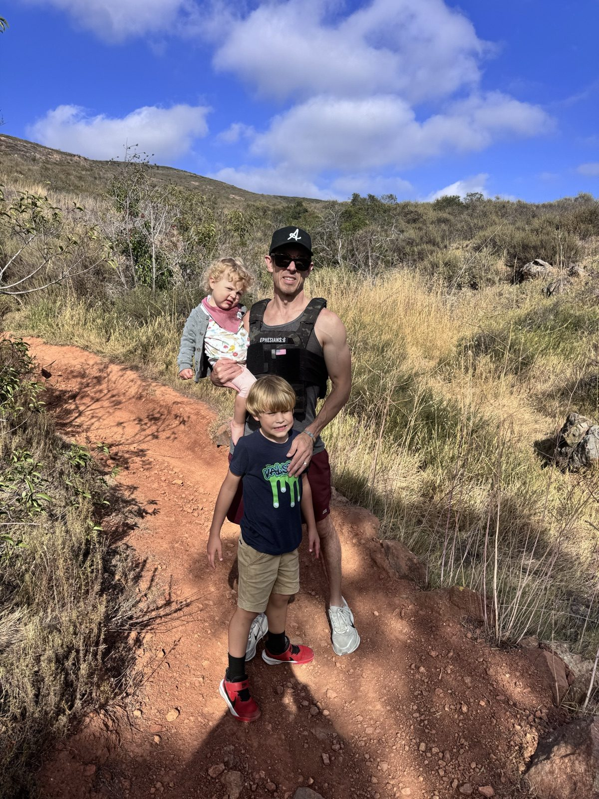

01
Small batches only
We never bake more than the kitchen and the day can give proper care to. Every loaf gets full attention.

Communion Breads began the way most good things do — slowly, in a home kitchen, with a starter on the counter and the smell of flour in the air.
Raised in a Swedish family with a deep love of European food, Soren grew up watching levain ferment overnight, rye come out of the oven on cold mornings, and family gather around a sliced loaf with butter and good cheese.
Cooking came easily; baking did not. Then 2020 arrived, the world held still, and Soren started where many home bakers do — croissants. Layers of butter, weeks of failed attempts, eventually flaky enough that his wife and kids kept asking for more.
Then came sourdough. The first loaf was a hit at the table; the second was better; the third disappeared inside a day. A starter on the counter became the slow rhythm of the kitchen, and the long, quiet work of levain — feeding it, listening to it, letting time do most of the labor — is the part he loves most.
Today, each loaf is mixed by hand, fermented for a full day-and-a-half, and baked one at a time in a 6-quart cast iron Dutch oven — the same way good bread has been made for centuries.
“I can’t stop baking this bread — it’s so rewarding. Fresh leaven seems miraculous.”
In the autumn of 2016, Soren and his brother Jensen went back to the town the family comes from — Dannäs, a small village in Småland, southern Sweden. A road sign with the family name on it. A family estate still standing under autumn trees.
Two weeks of walking ancestral fields, eating meatballs and lingonberries in candlelit pubs, skating outdoors at night under Christmas lights, watching Stockholm reflect itself in the harbor at dusk. Two brothers, no agenda — just listening to what the place still had to say.
Most of what's baked today was learned on that trip. Not the technique, which came later from many hands. But the why.





Hösten · Autumn · 2016
Soren's grandmother baked on Saturdays so the house had bread for Sunday. The smell was theology before he had words for it.
Years later, when he found his own faith, he found that bread is everywhere in it — from a stranger named Melchizedek who brought out bread and wine to bless a road-weary Abraham, to a stranger on the road to Emmaus whose face was hidden until he broke the bread. The pattern repeats. A blessing follows.
That's why we call them Communion Breads. Not because the bread is sacred in itself, but because the One who took bread, gave thanks, and broke it, made it the sign He chose. Every loaf is a small remembrance of a much bigger meal — and a small offering for the family He's given us.

Three commitments that shape every loaf we bake.
We never bake more than the kitchen and the day can give proper care to. Every loaf gets full attention.
No commercial yeast. No shortcuts. Just a living starter, time, and good flour doing what they've always done.
Stone-milled whole grains, filtered water, salt. That's it. Nothing on the label you can't pronounce.
Pre-order a full or half loaf — baked fresh on your pickup day.
Place Your Order